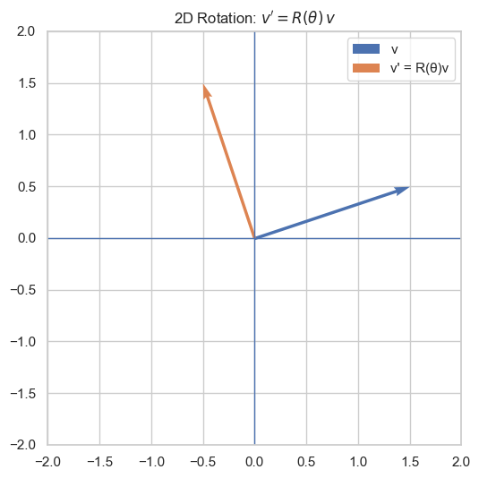

The Evolution of Position Encoding in the Transformer
After Transformer(Vaswani et al. 2023) was introduced, it become the default components in the Deep Learning. It has several components, one of the most important (and most confused for me) was Position Encoding. However the original position encoding methods has several limit, several different methods was proposed later to improve the perform of position encoding in the transformer. In the article, we will explore different methods of position encoding, and extend to the image and video position encoding. But before that, let’s prepare some mathematic background to help us better understand the concepts.
1 Preliminary
1.1 \(\sin\) and \(\cos\) function
\(\sin\) and \(\cos\) function are two most basic periodic functions that we learned in high school. Both \(\sin\) and \(\cos\) function are periodic with period \(2\pi\): \[ \sin(\theta + 2\pi) = \sin \theta , \quad \cos(\theta + 2\pi) = \cos \theta \] The phase-shift(addition) formula for the \(\sin\) and \(\cos\) function is: \[ \begin{split} & \sin (\theta + \Delta ) = \sin \theta \cos \Delta + \cos \theta \sin \Delta \\ & \cos(\theta + \Delta) = \cos\theta\cos\Delta - \sin\theta\sin\Delta \end{split} \]
We can view those as functions of a real variable \(t\), than, \(\sin t\) and \(\cos t\) are smooth oscillating waves. A general 1D wave can be written as: \[ A \cos (\omega t + \phi) \] where: - \(A\) is amplitude: max / min value - \(\omega\) is frequency: how many cycles per unit time. - \(\phi\) is phase shift: horizontal shift
Here is the plot with different value of \(\omega\):
As we can see in the Figure 1, with larger values of \(\omega\), the \(\cos\) function oscillates more rapidly, while smaller values of \(\omega\) produce slower, less frequent oscillations.
import numpy as np
import seaborn as sns
import matplotlib.pyplot as plt
import pandas as pd
# Prepare data
t = np.linspace(0, 10, 2000)
omegas = [0.1, 1, 2]
data = []
for w in omegas:
data.append(pd.DataFrame({"t": t, "value": np.cos(w * t), "omega": str(w)}))
df = pd.concat(data)
# Plot
sns.set_theme(style="whitegrid")
plt.figure(figsize=(10, 5))
sns.lineplot(data=df, x="t", y="value", hue="omega")
plt.title("cos(ω t) for different ω")
plt.xlabel("t")
plt.ylabel("cos(ω t)")
plt.tight_layout()
plt.show()1.2 Rotation Matrix and Complex Exponential
The other usage of the \(\sin\) and \(\cos\) function is the in the rotation matrix. To rotate any 2D vector: \(\mathbf{v} = \begin{pmatrix}x \\y \end{pmatrix}\) by and angle \(\theta\) (counterclockwise), we can multiply it be the rotation matrix: \[ R(\theta) = \begin{pmatrix} \cos\theta & -\sin\theta \\ \sin\theta & \cos\theta \\ \end{pmatrix} \]
So, the new vector \(\mathbf{v}'\) be come: \[ \mathbf{v}' = R(\theta) \mathbf{v} = \begin{pmatrix} x\cos\theta - y\sin\theta \\ x\sin\theta + y\cos\theta \end{pmatrix} \] One of the good property of rotation matrix is that it is the orthonormal matrix(\(R^{\top}R = I\)), which means the length of original vector will not change after rotate: \[ \|Rv\|^2 = (Rv)^\top (Rv) = v^\top (R^\top R) v = v^\top I v = v^\top v = \|v\|^2 \]

On the other hand, a rotation in 2D can also be represented by multiplication be a complex number on the unit circle. The Euler’s Formula is define as: \[ e^{i\theta} = \cos \theta + i \sin \theta \] This complex number has: - magnitude 1 - angle \(\theta\) By multiplying a complex number by \(e^{i \theta}\) produces a rotation. For a point \((x, y)\), it can be represented as a complex number \(z = x + iy\). Rotate it by \(\theta\) radians by multiplying \(z = e^{i\theta} z\). Expand using Euler’s formula, we get: \[ z = (\cos \theta + i \sin \theta)(x + i y) = (x \cos \theta - y \sin \theta) + i(x \sin \theta + y \cos \theta) \] which is exact the same as the matrix mutiplication.
v = torch.tensor([1.5, 0.5]) # original vector v = (x, y)
theta = torch.tensor(np.pi / 2) # rotation angle in radians (e.g
z = torch.view_as_complex(v.view(-1, 2))
rot = torch.exp(1j * theta) # e^{iθ} j = \sqrt{-1}.
z_rot = rot * z # rotated complex number
v_rot = torch.view_as_real(z_rot).view(-1) # rotated vector v' = R(θ) vWe mentioned that a phase shift of \(\Delta\) in the previous. One of important observation is that it is equivalent to applying a 2D rotation on the vector \(\begin{pmatrix} \cos \theta \\ \sin \theta\end{pmatrix}\): \[ \begin{split} \begin{pmatrix} \cos(\theta+\Delta) \\ \sin(\theta+\Delta) \end{pmatrix} & = \begin{pmatrix} \cos\theta\cos\Delta - \sin\theta\sin\Delta \\ \sin \theta \cos \Delta + \cos \theta \sin \Delta \end{pmatrix} \\ & = \begin{pmatrix} \cos\Delta & -\sin\Delta \\ \sin\Delta & \cos\Delta \end{pmatrix} \begin{pmatrix} \cos\theta \\ \sin\theta \end{pmatrix} \\ & = R(\Delta) \begin{pmatrix} \cos \theta \\ \sin \theta\end{pmatrix} \end{split} \]
1.3 Attention in Transformer
Attention mechanism is the most important component in the transformer (Vaswani et al. 2023). It process sequences by employ three learnable weight matrices \(W_{Q}, W_{K}, W_{V} \in \mathbb{R}^{d \times d_{\text{model}}}\). where \(d_{\text{model}}\) represents the dimensionality of the projected subspaces. The matrices transform the input \(\mathrm{x}\) into queries, keys, and values respectively: \[ Q = XW_{Q}, \quad K = XW_{K}, \quad V = XW_{V} \] And the attention matrix is computed using the following formula: \[ \begin{split} \text{Attenion}(Q, K) &= \text{softmax} \left( \frac{QK^{\top}}{\sqrt{ d_{\text{model}} }} \right) \\ Z &= \text{Attenion}(Q, K) V \end{split} \]
As we can see, on
We have review some concepts, now we are going to learned different types of the position encodings. The position encoding can be seperated into three different types:
- Absolute Positional Encoding
- Learned Positional Encoding
- Relative Positional Encoding
- RoPE
Let’s dig into one by one.
2 Absolute Positional Encoding
The absolute positional encoding was first introduced in the original Transformer paper (Vaswani et al. 2023). It defined as:
\[ \begin{split} PE_{(pos, 2i)} &= \sin \left( \frac{pos}{10,000^{2i / d_{\text{model}}}} \right) \\ PE_{(pos, 2i + 1)} &= \cos \left( \frac{pos}{10,000^{2i / d_{\text{model}}}} \right) \\ \end{split} \]
where:
- \(pos\) is the position id (0, 1, 2..n)
- \(i\) is the half of the dimension.
So for the \(\mathbf{x}\) is the in the position \(p\), it has position embedding vector: \[ \mathrm{x}_{p} = \begin{pmatrix} \sin \left( \frac{p}{10,000^{\textcolor{red}{0} / d_{\text{model}}}} \right) \\ \cos \left( \frac{p}{10,000^{\textcolor{red}{0} / d_{\text{model}}}} \right) \\ \sin \left( \frac{p}{10,000^{\textcolor{red}{2} / d_{\text{model}}}} \right) \\ \cos \left( \frac{p}{10,000^{\textcolor{red}{2} / d_{\text{model}}}} \right) \\\ \vdots \\ \sin \left( \frac{p}{10,000^{\textcolor{red}{i / 2} / d_{\text{model}}}} \right) \\ \cos \left( \frac{p}{10,000^{\textcolor{red}{i / 2} / d_{\text{model}}}} \right) \end{pmatrix} \]
As we can see, each pair of dimensions\((2i, 2i+1)\) is one sinusoidal wavelength. The \(\omega\) range from 1 to 10,000 with dimension \(i\) increase. As in the Figure 1, the lower \(\omega\) the frequence range less, which mean the wavelength, vice verse. Ok, good, this sound nice and fancy, but why this is useful in the Transformer? We known that with small \(\omega\), we have long wavelength, which mean is change slow, only with huge different \(pos\), we can see the different between position. This is good to capture the global position information. On the other hand, with large \(\omega\), is change rapidly, with little change of the position, we can see the different, this is good for the local structure.
- Low frequency (small \(\omega\)) → long wavelength → changes slowly → captures global structure
- High frequency (large \(\omega\)) → short wavelength → changes rapidly → captures local structure
To implement this, it is also easy:
def sinusoidal_positional_encoding(max_len, d_model):
pe = torch.zeros(max_len, d_model)
positions = torch.arange(0, max_len).unsqueeze(-1) # shape (max_len, 1)
div_terms = torch.exp(
torch.arange(0, d_model, 2) * -(np.log(10000.0) / d_model)
) # shape (d_model/2,)
pe[:, 0::2] = torch.sin(positions * div_terms) # even indices
pe[:, 1::2] = torch.cos(positions * div_terms) # odd indices
return peOne of the small trick we used in the div_terms \(10,000^{-2i / d_{\text{model}}}\) it produce like \[
\left[ 10000^{0/d_{\text{model}}},\ 10000^{-2/d_{\text{model}}},\ 10000^{-4/d_{\text{model}}},\ \ldots \right]
\] The \(a^{x} = e^{x \cdot \log a}\), so we can express \(10,000^{-2i / d_{\text{model}}}\) as \(e^{-2i / d_{\text{model}} \cdot 10,000}\). This is one way to prevent the numerical instablity.
The other good property of this position encoding is that:
We chose this function because we hypothesized it would allow the model to easily learn to attend by relative positions, since for any fixed offset k, P Epos+k can be represented as a linear function of P Epos. Attention Is All You Need, p.6
Let’s prove that: We can see, that for \(PE_{pos}\) and \(PE_{pos + k}\), we have: \[ PE_{pos + k} = \begin{pmatrix} \sin \left( \frac{pos + k}{10,000^{\textcolor{red}{0} / d_{\text{model}}}} \right) \\ \cos \left( \frac{pos + k}{10,000^{\textcolor{red}{0} / d_{\text{model}}}} \right) \\ \sin \left( \frac{pos + k}{10,000^{\textcolor{red}{2} / d_{\text{model}}}} \right) \\ \cos \left( \frac{pos + k}{10,000^{\textcolor{red}{2} / d_{\text{model}}}} \right) \\\ \vdots \\ \sin \left( \frac{pos + k}{10,000^{\textcolor{red}{2i} / d_{\text{model}}}} \right) \\ \cos \left( \frac{pos + k}{10,000^{\textcolor{red}{2i} / d_{\text{model}}}} \right) \end{pmatrix} \]
As we can see, for each pair of the \((2i, 2i + 1)\), we have position encoding \(\begin{pmatrix} \sin \left( \frac{pos + k}{10,000^{\textcolor{red}{2i} / d_{\text{model}}}} \right) \\ \cos \left( \frac{pos + k}{10,000^{\textcolor{red}{2i} / d_{\text{model}}}} \right) \end{pmatrix}\), this is same as the , Stack all pairs together, we get: \[ PE_{pos+k} = \begin{pmatrix} R_0(k) & & \\ & R_1(k) & \\ & & \ddots \\ \end{pmatrix} PE_{pos} \]
This function is also used in the Diffusion Model, to encoding the time \(t\). In the Diffusion Model, we have \(t\) to tell network in which we are currently in. For more details about diffusion model, go to visited this blog.
2.1 Learned Position Encoding
Instead give each position a pre-defined position embedding vector, we can let neural network to learned the information. After Transformer was proposed, several work such as BERT (Devlin et al. 2019) and GPT. (Radford et al., n.d.) One of the most outstanding is the position encoding in the Vision Transformer (Dosovitskiy et al. 2021).
Each patch in the image has a position id according to the raser order. Than the index is feed into MLP to project it into the position embedding space:
\[ PE(p) = MLP(p) \]
Compare to the sine,, this is math simpler to implement:
class LearnedPositionEncoding(nn.Module):
def __init__(self, max_len, d_model):
super().__init__()
self.position_embeddings = nn.Embedding(max_len, d_model)
def forward(self, positions):
return self.position_embeddings(positions)Just 2 lines of the code.
However, for the image, we known that it has 2D position, the x-axis and y-axis. So, with out flatten the patches, we can use the coordinate to represented the position encoding
2.2 2D Positional Encoding
Some model such as Diffusion Transformer (Peebles and Xie 2023), Masked Autoencoder (He et al. 2021) are use 2D sincos encoding as the position embedding.
The code implementation is as following:
import torch
import torch.nn as nn
class PosED(nn.Module):
def __init__(self, embed_dim, gird_zie):
super().__init__()
self.embed_dim = embed_dim
self.grid_size = grid_size
self.pos_embed = self.build_2d_sincos_pos_embed(
self.embed_dim, self.grid_size, cls_token=False, extra_tokens=0
)
def build_2d_sincos_pos_embed(self, embed_dim, grid_size, cls_token, extra_tokens):
# --- 1. build 2D grid ---
h = torch.arange(grid_size, dtype=torch.float32)
w = torch.arange(grid_size, dtype=torch.float32)
w_grid, h_grid = torch.meshgrid(w, h, indexing="ij") # match original numpy ordering: w first
grid = torch.stack([w_grid, h_grid], dim=0) # (2, H, W)
# reshape to (2, H*W)
grid = grid.reshape(2, -1)
# --- 2. build 2D sin-cos embeddings ---
emb_h = self.build_1d_sincos(embed_dim // 2, grid[0])
emb_w = self.build_1d_sincos(embed_dim // 2, grid[1])
pos_embed = torch.cat([emb_h, emb_w], dim=1) # (H*W, D)
# prepend extra tokens (e.g., cls token)
if cls_token and extra_tokens > 0:
extra = torch.zeros(extra_tokens, embed_dim)
pos_embed = torch.cat([extra, pos_embed], dim=0)
return pos_embed
def build_1d_sincos(self, embed_dim, pos):
"""
embed_dim: D/2
pos: (M,)
returns: (M, D/2)
"""
assert embed_dim % 2 == 0
omega = torch.arange(embed_dim // 2, dtype=torch.float32)
omega = omega / (embed_dim / 2.0)
omega = 1.0 / (10000**omega)
# outer product
out = pos[:, None] * omega[None, :] # (M, D/2)
emb = torch.cat([torch.sin(out), torch.cos(out)], dim=1)
return emb
def forward(self):
return self.pos_embedFor the image 2D position encoding is more natural than the 1D-sequence position encoding. For example, a 256×256 image split into 16×16 patches → 16×16 = 256 patches.
The actual spatial positions of these patches look like this:
If you use 1-D sinusoidal positional encoding, the sequence becomes:
This causes the model to incorrectly assume: • token1 is closer to token2 • token1 is farther from token17
But in the real 2-D image space: • token1 and token2 (left–right neighbors) are close • token1 and token17 (the patch directly below) are also close
3 Relative Positional Encoding
Absolute Positional Encoding is intuitive, but is this the best choice? Let’s consider a example, one sentence:
If the sentence shifts, 1 tokens to the right, become:
The semantics don’t change, but Absolute PE forces the model to re-learn this for every shift, it waste parameters and hurts generralization. On the other hand, the Relative Positional Encoding just encode the Relative position between tokens, if the sentence shift, the position encoding will not change.
import torch
import torch.nn as nn
class RelativePositionBias(nn.Module):
"""
1D relative position bias (T5 / Swin / DiT style).
Returns a [n_heads, L_q, L_k] tensor that you can add to attention logits.
"""
def __init__(self, num_heads: int, max_distance: int):
super().__init__()
self.num_heads = num_heads
self.max_distance = max_distance
# Distances in [-max_distance+1, max_distance-1] are each given an embedding.
# We store them in [0, 2*max_distance-1) via offset = distance + (max_distance - 1)
self.rel_embeddings = nn.Embedding(2 * max_distance - 1, num_heads)
def forward(self, q_len: int, k_len: int):
"""
Args:
q_len: length of query sequence (L_q)
k_len: length of key sequence (L_k)
Returns:
rel_pos_bias: [n_heads, L_q, L_k]
"""
# positions: [L_q, L_k]
q_positions = torch.arange(q_len, dtype=torch.long)[:, None] # [L_q, 1]
k_positions = torch.arange(k_len, dtype=torch.long)[None, :] # [1, L_k]
rel_pos = k_positions - q_positions # [L_q, L_k], values in [-(L_q-1), L_k-1]
# clip to [-max_distance+1, max_distance-1]
max_dist = self.max_distance - 1
rel_pos_clipped = torch.clamp(rel_pos, -max_dist, max_dist)
# shift to [0, 2*max_distance-2]
rel_pos_indices = rel_pos_clipped + max_dist
# lookup embeddings → [L_q, L_k, n_heads]
values = self.rel_embeddings(rel_pos_indices) # last dim = num_heads
# permute to [n_heads, L_q, L_k]
return values.permute(2, 0, 1)Some Vision Transformer such as Swin Transformer also use (Liu et al. 2021)
4 RoPE
First proposed in the (Su et al. 2023)
4.1 2D-RoPE
4.2 M-RoPE
5 Summary
| Type | Category | Mechanism | Models |
|---|---|---|---|
| Sinusoidal | Absolute | deterministic sin/cos | Original Transformer |
| Learned PE | Absolute | learned table | BERT, ViT |
| Shaw RPE | Relative | learned embedding per distance | Transformer-XL |
| T5 RPB | Relative bias | learned head-wise bias | T5, Swin, DiT |
| ALiBi | Relative bias (non-learned) | linear distance slope added to logits | GPT-NeoX, Pythia |
| RoPE | Relative (implicit) | rotate Q/K by position | GPT-J, LLaMA, DeepSeek |